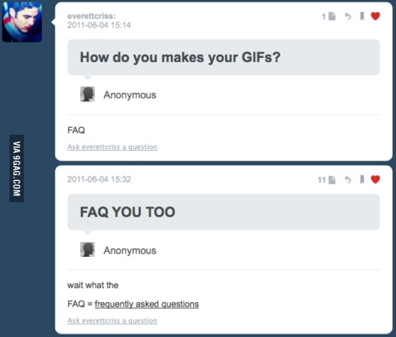

Building a static website with Silex
Created by Jonathan Petitcolas / @Sethpolma
Case study: creation of up-grading website

Choosing the right tool
WordPress
- Widely used for blogging and static websites
- Great administration panel
- Lot of plug-ins
BUT
- Lot of plug-ins
- It's not coding, it's hacking
- Maintenance is painful as hell
- Heavily based on database, even for configuration
Pure PHP
- Only strict minimum
- Best performances
- Maximum flexibility
BUT
- Must reinvent the wheel
Symfony2
- Very powerful framework
- Widely used and documented
- A lot of great bundles
BUT
- A little bit overkill
Choosing the right tool
The “micro” in microframework means [it] aims to keep the core simple but extensible. [It] won’t make many decisions for you, such as what database to use. Those decisions that it does make, such as what templating engine to use, are easy to change. Everything else is up to you, so that [it] can be everything you need and nothing you don’t.
Source: Flask
Silex
Bootstraping Silex
Installing Silex
Based on Composer:
{
"require": {
"silex/silex": "~1.1"
}
}Let's the magic happen!
composer install"Hello world!" with Silex
require_once __DIR__.'/../vendor/autoload.php';
$app = new Silex\Application();
$app->get('/hello', function () {
return 'Hello world!';
});
$app->run();Installing a template engine: Twig

Installing Twig
{
"require": {
// ...
"symfony/twig-bridge": "~2.3",
}
}Registering the service:
$app->register(new Silex\Provider\TwigServiceProvider(), array(
'twig.path' => __DIR__.'/../views',
));Hello Twig!
$app->get('/hello', function() use($app) {
return $app['twig']->render('hello.html.twig');
});<!DOCTYPE html>
<html>
<head>
<title>{% block title "Welcome on my site!" %}</title>
{% block stylesheets %}
<link href="css/style.css" rel="stylesheet" />
{% endblock %}
</head>
<body>
{% block content "" %}
{% block javascripts %}
<script src="js/jquery.js"></script>
{% endblock %}
</body>
</html>Internal linking
Internal linking?
<a href="/contact">Contact us</a>Bad practice: a change in a route would imply to change all links.
Three steps process
Registering UrlGenerator service:
$app->register(new Silex\Provider\UrlGeneratorServiceProvider());Name routes:
$app->get('/contact', function() use($app) {
// ...
})->bind('contact');Update template:
<a href="{{ app.url_generator.generate('contact') }}">
Contact us
</a>Organizing our routes
$routes = array(
'home' => array('url' => '/', 'template' => 'home.html.twig'),
'references' => array('url' => 'references', 'template' => 'references.html.twig'),
'contact' => array('url' => 'contact', 'template' => 'contact.html.twig'),
// ...
);
foreach ($routes as $routeName => $data) {
$app->get($data['url'], function() use($app, $data) {
return $app['twig']->render($data['template']);
})->bind($routeName);
}FAQ
Database required?
- Current pattern imply a page by question and one for list
- Will probably cause a desynchronization
- Solution: use a database and a "one-for-all-questions" controller
- Not a lot of writing, just reading
- Including database needs PDO or ORM
- Connections are slows
- Why not using YAML?
Storing our questions in YAML
question_1:
id: 1
question: "Comment financer ma formation ?"
slug: "comment-financer-ma-formation"
answer: |
<p>Il est possible de faire financer une formation par son employeur en utilisant
le DIF ou dans le cadre du CIF, ou de la VAE.</p>
[...]
question_2:
id: 2
question: "Qu'est-ce que le coaching ?"
slug: "qu-est-ce-que-le-coaching"
answer: |
<p>Le coaching professionnel est l’accompagnement personnalisé et suivi d’un
individu ou d’un groupe.</p>
[...]Using Symfony2 YAML parser
Add another dependency
{
"require": {
// ...
"symfony/yaml": "2.1.*@dev"
}
}Read a YAML file
use Symfony\Component\Yaml\Yaml;
Yaml::parse(file_get_contents($myFile));Question list
$app->get('/faq', function() use ($app) {
$yamlQuestions = file_get_contents(__DIR__.'/../data/questions.yml');
$questions = Yaml::parse($yamlQuestions);
return $app['twig']->render('faq/index.html.twig', array(
'questions' => $questions,
));
})->bind('faq');{% block body %}
<ul>
{% for question in questions %}
<li>
<a href="{{ app.url_generator.generate("faq_question", {
"id": question.id,
"slug": question.slug
}) }}">
{{ question.question }}
</a>
</li>
{% endfor %}
</ul>
{% endblock %}Question answer
$app->get('/faq/{id}/{slug}', function($id, $slug) use ($app) {
$yamlQuestions = file_get_contents(__DIR__.'/../views/faq/questions.yml');
$questions = Yaml::parse($yamlQuestions);
$question = $questions['question_'.$id];
// Ensure URL is correct
if ($question['slug'] !== $slug) {
$app->abort(404, "Question slug does not match.");
}
return $app['twig']->render('faq/question.html.twig', array(
'question' => $question
));
})->bind('faq_question');Any questions?